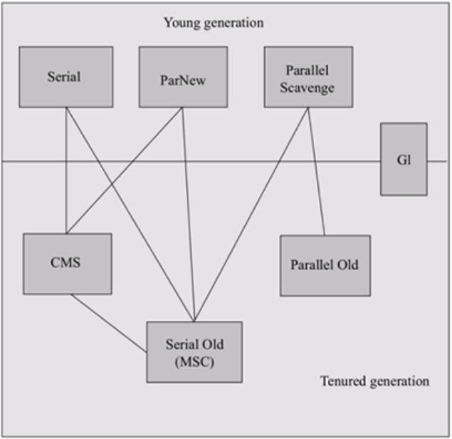
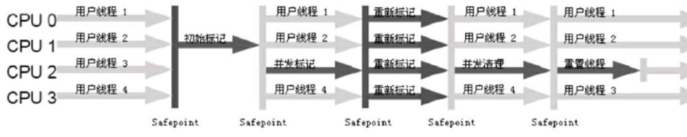

目的：写给自己看的，不如其他大神全，以后慢慢修修改改
一：如何判断数据是否垃圾数据
1.引用计数法
当创建一个对象时，为此对象分配一个引用计数器。当有其他对象引用这个对象时，计数器就+1。当引用失效了，计数器-1。
当一个对象的引用计数器=0时，此对象就可以被回收。
优点：原理简单，实现方便。
缺点：不能解决对象间循环引用问题，容易造成内存泄漏。
String a=hello
String b=weold
a=b
b=a
上面的例子中，这两个对象的引用计数器永远不为0，回收不掉，造成内存泄漏。
2.可达性分析法
这种算法的思想：判断一个对象和GC Root是否有相连的引用链，如果没有，则可以进行回收。这种算法解决了引用计数法的缺点(对象间循环引用问题)
二、如何回收垃圾（回收垃圾的方法）
1.Mark-Sweep 标记清除算法
缺点：回收之后会产生大量不连续的内存碎片,导致内存环境质量下降。印象是：当分配一个较大对象时，如果找不到连续的内存地址空间，则会提前出发一次GC（Full GC-全堆GC）
2.Copying算法 复制算法
优点：解决了Mark-Sweep的内存碎片问题
缺点：内存利用率较低，只有50%
根据研究，新生代的对象98%都是用完即扔。所以再划分内存空间大小时，按Eden(80%)和两块Survivor(10%)。每次是使用Eden和其中的一块Survivor。所以在这种优化下，新生代的内存利用率达到了90%。
3.Mark-Compact 标记整理算法
这种算法是基于标记清除算法做的改进。在进行垃圾清除过后进行碎片整理。
针对老生代的垃圾数据回收：①Mark-Sweep ②Mark-Compact
补充的概念：
新生代的GC称为：Minor GC 频率高
老生代的GC称为：Major(Full) GC 频率低
当发生Full GC时，是全堆GC，所以GC时间很长。
所以GC调优的目的是：尽量减少Full GC的出现或者延迟Full GC的到来
三、GC收集器
左图表示Java目前所支持的7种垃圾收集器。有连线表示可以配合使用。比如Serial和Serial Old可以一起使用。如果没有连线，就不能一起使用。
1.Serial 单线程收集器，特点是：垃圾回收时，会暂停所有的工作线程，而且停顿时间较长。这是java最早的收集器。
Serial的使用场景：可以回收桌面系统的垃圾
2.ParNew 多线程收集器。用于回收新生代的垃圾数据。因为是多线程收垃圾，所以停顿时间比Serial更短。
此外，ParNew还可以和CMS配合使用。CMS收集器停顿时间是最短的。
3.CMS（Concurrent Mark Sweep）
并发低停顿收集器。即回收垃圾时，CMS的间隔最短。
CMS的使用场景：对于服务器响应要求低延迟的场景使用，即注重服务器的低延迟相应速度。
比如HBase框架，后台在回收垃圾时，用的就是CMS。
CMS将垃圾回收分为4个过程：
1）初始标记 有停顿，仅是扫描对象引用链，所以停顿时间非常短。
2）并发标记
3）重新标记 有停顿，仅是扫描对象引用链，所以停顿时间非常短，作用是修正并发标记阶段的引用链变化
4）并发清除 垃圾清除阶段变为和用户并发处理机制，因为清除垃圾的时间是最长的，所以这样设计的目的可以极大的降低停顿的时间。并且清除垃圾的线程数可以调节。

优点：停顿时间最短，所以也称为并发停顿收集器
缺点：
①：CMS会产生浮动垃圾，这些浮动垃圾只能等到下一次GC时才能收掉。
②：垃圾收集线程和用户线程一起工作，共同抢用CPU时间片，所以可能会降低正常工作线程的执行效率。
③：CMS（Concurrent Mark Sweep）底层在回收垃圾时，用的时标记-清除算法，虽然快，但是会产生内存碎片。所以需要定期做碎片整理。
4.Parallel 吞吐量优先收集器
这类收集器并不关注回收的停顿长短，而是关注回收的吞吐量。
5.G1GC
G1GC舍弃了传统GC收集器的特点，不再将整个heap分为新生代和老生代，而是再heap创建一个一个的区域块(大小可以设置，最小是1MB，最大是32MB)进行处理。每一个区域块内部不进行新旧分区。而是整体被标记为Eden/Survivor/Old。
优点：
1.内存利用率非常高，利用了整个Heap的内存空间。而之前的传统GC收集器可能出现的情况：新生代内存紧张，老生代内存空余，这就是一种资源浪费的体现。
所以对一个服务器来说，内存越大，G1GC优势越明显。
2.对于GC，有两种，分别是Minor GC和Full GC。如果使用G1，触发Full GC的条件是：在整个Heap中找不到全空区域时才会发生Full GC。
所以，使用G1，发生Full GC的频次更低。
3.G1 GC引入了RememberSet的概念，避免在整个堆中扫描引用链，使得每个区域块的GC更快、更加独立。RememberSet记录了当前区域块中对象的引用关系。